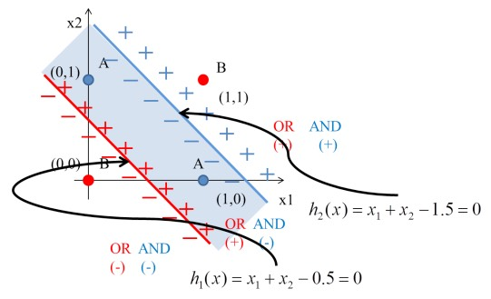
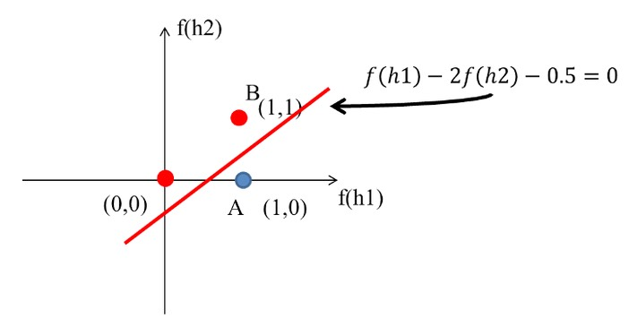
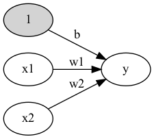

感知器
Table of Contents

1. Story of gate: From perceptron to MLP
1.1. Example #1
1.1.1. Question
有三個A、一個B，如何進行分類?

Figure 1: 分類任務:問題
1.1.2. Idea
最簡單的分類方式是在A和B中間直接找條直線(\(w_1x_1+w_2x_2+b=0\))就可以將A和B完整切出兩個區塊，然後再搭配階梯函數(step function)將>0與<=0分別設為1與0，用來代表類別0與1。該直線方程式如下：
\begin{equation} \label{org9d234c0} y = \begin{cases} 1, & w_1x_1 + w_2x_2-b>0 \\ 0, & w_1x_1 + w_2x_2-b\leq0 \\ \end{cases} \end{equation}1.1.3. Solution
經過無數的嚐試錯誤，也許我們可以矇到一個如下的方程式

Figure 2: 分類任務:Solution
如果畫成Perceptron的圖:
Figure 3: Perceptron presentation
如果將圖2的四點點代入y(方程式\eqref{org9d234c0}):
\begin{align*} A(0,1) \rightarrow y &= f(0,1) = f(1\times0+1\times1-0.5) = f(0.5) = 1 \\ A(1,0) \rightarrow y &= f(1,0) = f(1\times1+1\times0–0.5) = f(0.5) = 1\\ A(1,1) \rightarrow y &= f(1,1) = f(1\times1+1\times1–0.5) = f(1.5) = 1\\ B(0,0) \rightarrow y &= f(0,0) = f(1\times0+1\times0–0.5) = f(-0.5) = 0\\ \end{align*}1.1.4. OR gate
有點計概基礎的同學，應該可以發現圖1與OR邏輯閘一致，其真值表如下
| A | B | A OR B |
|---|---|---|
| 0 | 0 | 0 |
| 0 | 1 | 1 |
| 1 | 0 | 1 |
| 1 | 1 | 1 |
1.1.5. Python實作
上述 OR gate的python實作如下
1: import numpy as np 2: 3: def step_function(x): 4: return np.array(x>0, dtype=np.int) 5: 6: def OR(x1, x2): 7: x = np.array([x1, x2]) 8: w = np.array([1, 1]) 9: b = -0.5 10: theta = 0 11: y = np.sum(w*x) + b 12: return step_function(y) 13: 14: print("0 OR 0 -> ", OR(0,0)) 15: print("0 OR 1 -> ", OR(0,1)) 16: print("1 OR 0 -> ", OR(1,0)) 17: print("1 OR 1 -> ", OR(1,1))
0 OR 0 -> 0 0 OR 1 -> 1 1 OR 0 -> 1 1 OR 1 -> 1
1.2. Example #2
上述範例中，我們以瞎貓精神找出了一組solution解決了OR gate的分類問題，請比照辦理，解決AND gate，建構出perceptro，實作出python code. 已知AND gate真值表如下
| A | B | A AND B |
|---|---|---|
| 0 | 0 | 0 |
| 0 | 1 | 0 |
| 1 | 0 | 0 |
| 1 | 1 | 1 |
1.3. XOR Problem
1.3.1. Question
XOR(互斥或)真值表如下:
| A | B | A XOR B |
|---|---|---|
| 0 | 0 | 0 |
| 0 | 1 | 1 |
| 1 | 0 | 1 |
| 1 | 1 | 1 |
其輸入/輸出分佈圖為

Figure 4: XOR Gate
1.3.2. Idea
一個便當吃不飽那就吃兩個阿 –馬惠帝
這個時候一般線性的分類就沒有辦法很完美分割(如下圖)，所以就需要一些變形的方法來達到目的。

Figure 5: XOR Gate Solution ideas
即便一個人再如何bumbler，仍有可能提出一些明智的話語，就如同星爺告訴我們的

Figure 6: 就算是一張衛生紙也有它的用途，更何況是一個bumbler
所以，一條線無法分割，那就用兩條啊啊啊~~~
1.3.3. Solution #1

Figure 7: XOR Gate Solution
如前所述，一條線為一個perceptron，這裡會用到兩個
- \(h_1(x) = x_1 + x_2 - 0.5\)
- \(h_2(x) = x_1 + x_2 - 1.5\)

Figure 8: XOR Gate Solution 2
將圖5的4個點代入\(h_1\):
\begin{align*} h_1(0,0) &= f(1\times0+1\times0–0.5) = f(-0.5) = 0\\ h_1(0,1) &= f(1\times0+1\times1-0.5) = f(0.5) = 1\\ h_1(1,0) &= f(1\times1+1\times0–0.5) = f(0.5) = 1\\ h_1(1,1) &= f(1\times1+1\times1–0.5) = f(1.5) = 1\\ \end{align*}將圖5的4個點代入\(h_2\):
\begin{align*} h_2(0,0) &= f(1\times0+1\times0–1.5) = f(-1.5) = 0\\ h_2(0,1) &= f(1\times0+1\times1-1.5) = f(-0.5) = 0\\ h_2(1,0) &= f(1\times1+1\times0–1.5) = f(-0.5) = 0\\ h_2(1,1) &= f(1\times1+1\times1–1.5) = f(0.5) = 1\\ \end{align*}由上可知:
- (0, 0)帶入第1個perceptron \(h_1(0,0)\)輸出-0.5、帶入第2個perceptron \(h_2(0,0)\)輸出-1.5；(-0.5, -1.5)再經由step function轉換輸出(0,0)
- (0, 1)帶入第1個perceptron \(h_1(0,1)\)輸出0.5、帶入第2個perceptron \(h_2(0,1)\)輸出-0.5；(0.5, -0.5)再經由step function轉換輸出(1,0)
- (1, 0)帶入第1個perceptron \(h_1(1,0)\)輸出0.5、帶入第2個perceptron \(h_2(1,0)\)輸出-0.5；(0.5, -0.5)再經由step function轉換輸出(1,0)
- (1, 1)帶入第1個perceptron \(h_1(1,1)\)輸出1.5、帶入第2個perceptron \(h_2(1,1)\)輸出0.5；(1.5, 0.5)再經由step function轉換輸出(1,1)
即
\begin{align*} data(0,0) &= f(h_1,h_2) = (0,0) \\ data(0,1) &= f(h_1,h_2) = (1,0) \\ data(1,0) &= f(h_1,h_2) = (1,0) \\ data(1,1) &= f(h_1,h_2) = (1,1) \\ \end{align*}這相當於透過兩個perceptron將原本的輸入做特徵空間轉換，如圖9:

Figure 9: XOR Gate Solution 3
這個時候只要設計一個線性分類器就可以完美分割兩類的資料了阿，如圖10:

Figure 10: XOR Gate Solution 4
XOR問題的神經網路結構如下圖:
Figure 11: XOR Gate Solution 5
1.3.4. Solution #2
當資料分布如同開頭的XOR(線性不可分的案例)，仍是不可解的，即使找個絕頂聰明的人仍無法以一條直線分割非線性的資料分布。因此我們會藉由多層感知器處理這個問題，也就是利用feature transform的概念，將原本線性不可分的輸入資料映射到線性可分的特徵平面上，特徵轉換的效果也就是造就深層網路效果能優異的原因1。如下圖是原本不可分的XOR例子：
為了處理這個問題，我們只需要使用介紹激活函數時使用的兩層感知器就可以做出XOR的效果，下圖是經過feature transform後四個點在y1-y2平面上的位置，我們可以輕易地使用圖中的綠色直線將兩個類別切開。所使用的感知器為(當然這組解只是個例子而已，答案非唯一解)：
\[w_1 = [0.2, -0.3], b_1 = 0.2\] \[w_2 = [-0.8, 1.1], b_2 = 1\]
1: # -*- coding: utf-8 -*- 2: 3: import numpy as np 4: import matplotlib.pyplot as plt 5: 6: def Perceptron(w, x, b): 7: return Sigmoid(np.dot(w, x) + b) 8: 9: 10: def Sigmoid(x): 11: return 1/(1+np.exp(-x)) 12: 13: # 畫出原始XOR 14: plt.figure() 15: pts = np.array([[0, 0], [1, 1], [0, 1], [1, 0]]) 16: plt.title("Original XOR") 17: plt.xlabel("x1") 18: plt.ylabel("x2") 19: plt.plot(pts[0:2,0], pts[0:2,1], 'bx', pts[2:4,0], pts[2:4,1], 'ro'); 20: plt.show() 21: 22: # 人為給定w與b 23: w1 = [0.2, -0.3] 24: b1 = 0.2 25: w2 = [-0.8, 1.1] 26: b2 = 1 27: 28: for pt in pts: 29: # 計算feature transform後的輸出 (y1 and y2) 30: if "y" not in dir(): 31: y = np.array([Perceptron(w1, pt, b1), Perceptron(w2, pt, b2)]) 32: else: 33: y = np.row_stack((y, np.array([Perceptron(w1, pt, b1), Perceptron(w2, pt, b2)]))) 34: 35: # 畫出轉換到y1-y2平面上的四個點 36: plt.figure() 37: plt.title("Transfomed XOR") 38: plt.xlabel("y1") 39: plt.ylabel("y2") 40: plt.plot(y[0:2,0], y[0:2,1], 'bx', y[2:4,0], y[2:4,1], 'ro'); 41: 42: # 舉個能切割開兩類別的直線例子 43: plt.plot([0.48, 0.6], [0.9, 0.57], 'g-', linewidth=1.5) 44: plt.show() 45: 46: del y
1.4. MLP (Multilayer perceptron)
由XOR問題的例子可以知道，第一層兩個Perceptron在做的事情其實是將資料投影到另一個特徵空間去,最後再把h1和h2的結果當作另一個Perceptron的輸入，再做一個下一層的Perceptron就可以完美分類XOR問題。
上例其實就是一個Two-Layer Perceptrons，第一層的Perceptron輸出其實就是每個hidden node，所以如果hidden layer再多一層就是Three-Layer Perceptrons，所以很多層的Perceptrons組合起來就是多層感知機 (Multilayer perceptron, MLP)。MLP其實就是可以用多層和多個Perceptron來達到最後目的，有點像用很多個回歸方法/線性分類器一層一層疊加來達到目的。
中間一堆的hidden layer其實就是在做資料的特徵擷取，可以降維，也可以增加維度，而這個過程不是經驗法則去設計，而是由資料去學習得來，最後的輸出才是做分類，所以最後一層也可以用SVM來分類。
如果層數再多也可以稱為深度神經網路(deep neural network, DNN)，所以現在稱的DNN其實就是人工神經網路的MLP。有一說法是說因為MLP相關的神經網路在之前因為電腦限制所以performance一直都沒有很好的突破，所以相關研究沒有像SVM這麼的被接受，因此後來Deep learning的聲名大噪，MLP也換個較酷炫的名字(deep neural network)來反轉神經網路這個名稱的聲勢。
多層感知機是一種前向傳遞類神經網路，至少包含三層結構(輸入層、隱藏層和輸出層)，並且利用到「倒傳遞」的技術達到學習(model learning)的監督式學習，以上是傳統的定義。現在深度學習的發展，其實MLP是深度神經網路(deep neural network, DNN)的一種special case，概念基本上一樣，DNN只是在學習過程中多了一些手法和層數會更多更深2。
2. 感知器(Perception)
2.1. 何謂感知器
Perceptron is a single layer neural network and a multi-layer perceptron is called Neural Networks(神經網路).
收到多個輸入訊號之後，再當作一個訊號輸出，如圖12所示，\(x_1, x_2\)為輸入訊號，\(y\)為輸出訊號，\(w_1, w_2\)代表權重(weight)，圖中的圓圈稱為「神經元」或稱作「節點」。神經元\(x_1, x_2\)的訊號是否會觸發神經元\(y\)使其輸出訊號則取決於\(w_1x_1+w_2x_2\)是否會超過某個臨界值\(\theta\)。

Figure 12: 收到兩組輸入訊號的感知器
若以算式表示此一觸發條件則如公式\eqref{orged7de36}所示。
\begin{equation} \label{orged7de36} y = \begin{cases} 0 & \text (w_1x_1+w_2x_2 \leq 0) \\ 1 & \text (w_1x_1 + w_2x_2 > 0) \end{cases} \end{equation}2.2. 感知器工作原理
2.2.1. Version #1: 使用weight
感知器（perceptron）是 人造神經元（artificial neuron）的一種，也是最基本的一種。它接受一些輸入，產生一個輸出。

Figure 13: Perceptron version 1
- 這種架構的輸入/輸出關係為線性
- 神經網路中再多的線性perceptron叠加，仍為線性
- 無法解決 線性不可分 的問題
- 線性可分 v.s. 線性不可分
- 低維映射至高維
在SVM的解決方案中，可以透過一個非線性的映射將低維空間線性不可分的樣本轉換至高維空間，使其成為線性可分 4，例如:

Figure 15: Kernal function mapping

2.2.2. Version #2: 加入bias
Figure 16: Perceptron version 2
- 不加 bias 你的分類線(面)就必須過原點，這顯然是不靈活的
- 透過bias，可以將NN進行左右調整，以適應(fit)更多情況
- 可以將bias視為一個activate perceptron的threshold
- bias也可以視為當輸入均為0時的輸出值
- 從仿生學的角度，刺激生物神經元使它興奮需要刺激強度超過一定的閾值，同樣神經元模型也仿照這點設置了bias
2.2.3. Version #3: 加入activation function
加入activation function

Figure 17: Perceptron version 2
2.2.4. 結論: 什麼是perceptron
其實Perceptron就只是一個兩層的神經網路，輸入層和輸出層
2.3. 執行感知器: 邏輯閘實作
2.3.1. AND gate(版本#1：只設定權重)
以上述感知器的運作方式來模擬 AND 邏輯閘的功能，可由以下程式碼實現出來。
1: def AND(x1, x2): 2: w1, w2, theta = 0.5, 0.5, 0.7 3: tmp = x1*w1 + x2*w2 4: if tmp <= theta: 5: return 0 6: else: 7: return 1 8: 9: print("AND(1, 0): ", AND(1,0)) 10: print("AND(1, 0): ", AND(1,1))
AND(1, 0): 0 AND(1, 0): 1
如程式碼第9行所示，傳入\(1, 0\)為輸入訊號，而根據計算結果是否達到臨界值(\(\theta=0.7\))來決定最終的輸出訊號\(0\)。
2.3.2. AND gate(版本#2: 導入權重及偏權值)
在版本#1 的實作中，我們只透過輸入訊號與權重的計算來實現感知器的運作，事實上，這個感知器也可以用公式\eqref{org4a1e530}來表示，這裡利用\(b\)這個被稱作「偏移值」或「偏權值」的參數來控制神經元的觸發難度，此時的感知器如圖19所示。
\begin{equation} \label{org4a1e530} y = \begin{cases} 0 & \text (b+w_1x_1+w_2x_2 \leq 0) \\ 1 & \text (b+w_1x_1 + w_2x_2 > 0) \end{cases} \end{equation}
Figure 18: 加入偏移值\(b\)的感知器
在圖19中，增加了一個權重為\(b\)、輸入值為 1 的訊號，偏權值的作用與權重\(w_1\)及\(w_2\)不同，\(w_1\)與\(w_2\)的功能是控制輸入訊號重要程度的參數，但是\(b\)的功能是調整輸出訊號 1 的參數，偏權值也包含了「偏移」的意思。這是指在沒有輸入時，輸出究竟會產生多少偏移量。此外，由於偏移值的輸入訊號固定為 1，以圖形表示時，會用灰色填滿神經元，藉此區隔其他神經元。
以下為針對上述版本#1 的 AND 邏輯閘模擬程式碼進行的修正，將偏移值的機制加入感知器的運作流程中。

Figure 19: And Gate perceptron
1: import numpy as np 2: def AND(x1, x2): 3: x = np.array([x1, x2]) 4: w = np.array([0.5, 0.5]) 5: b = -0.7 6: theta = 0 7: tmp = np.sum(w*x) + b 8: if tmp <= theta: 9: return 0 10: else: 11: return 1 12: 13: print("1 AND 0 -> ",AND(1,0)) 14: print("1 AND 1 -> ",AND(1,1)) 15: 16: #draw corresponding dots 17: import matplotlib.pyplot as plt 18: xs = np.array([0, 0, 1, 1]) 19: ys = np.array([0, 1, 0, 1]) 20: for xi, yi in zip(xs, ys): 21: print(AND(x, y)) 22:
1 AND 0 -> 0 1 AND 1 -> 1
2.3.3. OR, NAND gates
同樣的感知器架構亦可實作出 OR 邏輯閘的功能：
1: import numpy as np 2: def OR(x1, x2): 3: x = np.array([x1, x2]) 4: w = np.array([0.5, 0.5]) 5: b = -0.2 6: theta = 0 7: tmp = np.sum(w*x) + b 8: if tmp <= theta: 9: return 0 10: else: 11: return 1 12: print(OR(0,0))
也可實作出 NAND 邏輯閘的原理。
1: import numpy as np 2: def NAND(x1, x2): 3: x = np.array([x1, x2]) 4: w = np.array([-0.5, -0.5]) 5: b = 0.7 6: tmp = np.sum(w*x) + b 7: if tmp <= 0: 8: return 0 9: else: 10: return 1 11: print(NAND(0,0))
3. 以感知器解決分類問題(監督式學習範例)
從「鳶尾花資料集」取出兩類花(Setosa, Versicolor)，藉由不同的兩個屬性（花萼長、花瓣長）對其行分類，如圖20。
1: # coding: utf-8 2: import numpy as np 3: import pandas as pd 4: import matplotlib.pyplot as plt 5: from matplotlib.colors import ListedColormap 6: ### 感知器模型 7: class Perceptron(object): 8: """Perceptron classifier. 9: 參數： 10: ------------ 11: eta : float: 學習率 (0.0 ~ 1.0) 12: n_iter : int: 訓練次數 13: Passes over the training dataset. 14: random_state : int 15: 屬性 16: ----------- 17: w_ : 1d-array: 訓練後的權重 18: Weights after fitting. 19: errors_ : list: 每次訓練的錯誤次數 20: 21: """ 22: def __init__(self, eta=0.01, n_iter=50, random_state=1): 23: self.eta = eta 24: self.n_iter = n_iter 25: self.random_state = random_state 26: 27: def fit(self, X, y): 28: """Fit training data. 29: Parameters 30: ---------- 31: X : {array-like}, shape = [n_samples, n_features] 32: Training vectors, where n_samples is the number of samples and 33: n_features is the number of features. 34: y : array-like, shape = [n_samples] 35: Target values. 36: 37: Returns 38: ------- 39: self : object 40: 41: """ 42: rgen = np.random.RandomState(self.random_state) 43: self.w_ = rgen.normal(loc=0.0, scale=0.01, size=1 + X.shape[1]) 44: self.errors_ = [] 45: 46: for _ in range(self.n_iter): 47: errors = 0 48: for xi, target in zip(X, y): 49: update = self.eta * (target - self.predict(xi)) 50: self.w_[1:] += update * xi 51: self.w_[0] += update 52: errors += int(update != 0.0) 53: self.errors_.append(errors) 54: return self 55: 56: def net_input(self, X): 57: """Calculate net input""" 58: return np.dot(X, self.w_[1:]) + self.w_[0] 59: 60: def predict(self, X): 61: """Return class label after unit step""" 62: return np.where(self.net_input(X) >= 0.0, 1, -1) 63: 64: v1 = np.array([1, 2, 3]) 65: v2 = 0.5 * v1 66: np.arccos(v1.dot(v2) / (np.linalg.norm(v1) * np.linalg.norm(v2))) 67: 68: # 讀入訓練集資料 69: df = pd.read_csv('https://archive.ics.uci.edu/ml/' 70: 'machine-learning-databases/iris/iris.data', header=None) 71: print(df.tail()) 72: 73: # select setosa and versicolor 74: y = df.iloc[0:100, 4].values 75: y = np.where(y == 'Iris-setosa', -1, 1) 76: 77: # extract sepal length and petal length 78: X = df.iloc[0:100, [0, 2]].values 79: 80: # plot data 81: plt.clf() 82: plt.scatter(X[:50, 0], X[:50, 1], 83: color='red', marker='o', label='setosa') 84: plt.scatter(X[50:100, 0], X[50:100, 1], 85: color='blue', marker='x', label='versicolor') 86: 87: plt.xlabel('sepal length [cm]') 88: plt.ylabel('petal length [cm]') 89: plt.legend(loc='upper left') 90: 91: plt.savefig('02_06.png', dpi=300) 92: # plt.show() 93: 94: # 訓練感知器模型 95: ppn = Perceptron(eta=0.1, n_iter=10) 96: ppn.fit(X, y) 97: plt.clf() 98: plt.plot(range(1, len(ppn.errors_) + 1), ppn.errors_, marker='o') 99: plt.xlabel('Epochs') 100: plt.ylabel('Number of updates') 101: 102: plt.savefig('02_07.png', dpi=300) 103: #plt.show() 104: 105: # ### A function for plotting decision regions 106: def plot_decision_regions(X, y, classifier, resolution=0.02): 107: 108: # setup marker generator and color map 109: markers = ('s', 'x', 'o', '^', 'v') 110: colors = ('red', 'blue', 'lightgreen', 'gray', 'cyan') 111: cmap = ListedColormap(colors[:len(np.unique(y))]) 112: 113: # plot the decision surface 114: x1_min, x1_max = X[:, 0].min() - 1, X[:, 0].max() + 1 115: x2_min, x2_max = X[:, 1].min() - 1, X[:, 1].max() + 1 116: xx1, xx2 = np.meshgrid(np.arange(x1_min, x1_max, resolution), 117: np.arange(x2_min, x2_max, resolution)) 118: Z = classifier.predict(np.array([xx1.ravel(), xx2.ravel()]).T) 119: Z = Z.reshape(xx1.shape) 120: plt.contourf(xx1, xx2, Z, alpha=0.3, cmap=cmap) 121: plt.xlim(xx1.min(), xx1.max()) 122: plt.ylim(xx2.min(), xx2.max()) 123: 124: # plot class samples 125: for idx, cl in enumerate(np.unique(y)): 126: plt.scatter(x=X[y == cl, 0], 127: y=X[y == cl, 1], 128: alpha=0.8, 129: c=colors[idx], 130: marker=markers[idx], 131: label=cl, 132: edgecolor='black') 133: plt.clf() 134: plot_decision_regions(X, y, classifier=ppn) 135: plt.xlabel('sepal length [cm]') 136: plt.ylabel('petal length [cm]') 137: plt.legend(loc='upper left') 138: 139: 140: plt.savefig('02_08.png', dpi=300) 141: #plt.show() 142:
0 1 2 3 4
145 6.7 3.0 5.2 2.3 Iris-virginica
146 6.3 2.5 5.0 1.9 Iris-virginica
147 6.5 3.0 5.2 2.0 Iris-virginica
148 6.2 3.4 5.4 2.3 Iris-virginica
149 5.9 3.0 5.1 1.8 Iris-virginica

Figure 20: 待分類的兩種花依其不同屬性之分佈狀況

Figure 21: 感知器訓練過程

Figure 22: 訓練後的分類結果
4. 單層感知器的極限與多層感知器: XOR gate
到目前為止，透過權重及偏權值可以設計 AND、NAND、OR, 但無法完成 XOR。然而，其實我們可以透過 NAND、OR 及 AND 三個功能組合出 XOR 還輯閘，其組合方式如圖25所示，顯然，若要再以感知器來模擬其運作原理，單層感知器已不敷使用。

Figure 23: XOR 還輯閘的組合
4.1. 多層感知器(Multilayer perceptron, MLP): XOR gate 實作

Figure 24: MLP解決XOR Gate

Figure 25: Linearly Separable
參考圖25的架構，我們可以藉由增加感知器的層數來實現 XOR 的功能，其結構如圖26所示。

Figure 26: 多層感知器模擬 XOR 還輯閘
至於其實作程式碼則如下。
1: #python code for XOR gate simulation 2: import numpy as np 3: 4: def AND(x1, x2): 5: x = np.array([x1, x2]) 6: w = np.array([0.5, 0.5]) 7: b = -0.7 8: theta = 0 9: tmp = np.sum(w*x) + b 10: if tmp <= theta: 11: return 0 12: else: 13: return 1 14: 15: def OR(x1, x2): 16: x = np.array([x1, x2]) 17: w = np.array([0.5, 0.5]) 18: b = -0.2 19: theta = 0 20: tmp = np.sum(w*x) + b 21: if tmp <= theta: 22: return 0 23: else: 24: return 1 25: 26: def NAND(x1, x2): 27: x = np.array([x1, x2]) 28: w = np.array([-0.5, -0.5]) 29: b = 0.7 30: tmp = np.sum(w*x) + b 31: if tmp <= 0: 32: return 0 33: else: 34: return 1 35: 36: def XOR(x1, x2): 37: s1 = NAND(x1, x2) 38: s2 = OR(x1, x2) 39: y = AND(s1, s2) 40: return y 41: 42: print("XOR(0,0): ", XOR(0,0)) 43: print("XOR(0,1): ", XOR(0,1)) 44: print("XOR(1,0): ", XOR(1,0)) 45: print("XOR(1,1): ", XOR(1,1))
XOR(0,0): 0 XOR(0,1): 1 XOR(1,0): 1 XOR(1,1): 0